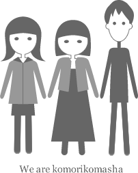

わたしたちについて

あんなこといいな。できたらいいな。
みんなで力を合わせれば、今までできなかったこと、きっとできるようになる。
ちょっと大変な時でも、仲間と一緒ならがんばれる。だから、いつでも楽しいこと考えよう、やってみよう、つくってみよう。
このサイトでは、コモモ・モリコ・ひろましゃのメンバーが勢いでつくったものを紹介しています。
１人じゃできないことも、力を合わせればできる。 やってみたいをカタチにする、３人の楽しいものづくり。
あんなこといいな。できたらいいな。
みんなで力を合わせれば、今までできなかったこと、きっとできるようになる。
ちょっと大変な時でも、仲間と一緒ならがんばれる。だから、いつでも楽しいこと考えよう、やってみよう、つくってみよう。
このサイトでは、コモモ・モリコ・ひろましゃのメンバーが勢いでつくったものを紹介しています。